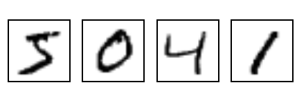

Building a Simple Neural Network from Scratch with NumPy
SkyNet0.1 is here...
Greetings and welcome to another blog post. It has been a while since my first little series and this time I want to try something a bit different. First though I just want to says thanks to everyone who read the last post - I really appreciate it. There's still plenty of stuff I can improve on so if you have any suggestions for how I can make the code better, or even ideas for new projects I'd love it if you dropped me a message. Hopefully I'll get a comments section up and running soon too.
Anyway....
We all know the impending AI revolution is about to wipe us all off the face of the earth. And that seems to be a step closer now that I have built an algorithm capable of TELLING WITHIN 95% ACCURACY WHAT DIGIT FROM 0-9 IS WRITTEN ON A 28x28 PIXEL PICTURE!! It's chilling stuff.
Hilarious nerd banter aside, there is no shortage of blog posts about building neural nets, nor about using the MNIST data set. However I wanted to make a quick-and-easy guide to building a very simple neural net without using a tonne of fancy packages. The only real feature I'm using on top of basic Python is NumPy's vector and matrix multiplication functions, as python loops would be tragically slow. It's also a really nice way of making sure you understand the underlying maths, as opposed to plugging your problem into someone else's model. To follow this you'll need intermediate python, including OOP, and a bit of vector calculus (and maybe too much time on your hands?).
I will briefly summarise the problem I am trying to solve. The MNIST data set is a selection of thousands of handwritten digits from 0-9 fitted onto a 28 x 28 pixel array. Each pixel has a value between 0 and 256, with 256 indicating fully-filled and 0 representing empty. From these low-fi images we want to create an algorithm able to correctly identify which digit has been written. For a human this is of course easy. But how we might translate our human intuition into machine language is not immediately obvious. Machine learning offers a solution. By feeding our algorithm a huge data set of examples, it can begin to learn the patterns behind our intuition.
Some example digits are below. Our task would therefore be for the computer to correctly interpret these as 5, 0, 4, 1

Lets start with a quick round-up of the basics of neural networks. If you want a much better introduction I highly recommend the video series from 3Blue1Brown which you can find here. For a more mathematical, in depth approach try Michael Nielsen's posts.
Neural nets are essentially a giant function. They take inputs and produce some output. In the simplest form, the inputs and outputs are just an array of numbers that represent some data. The 'neural' part arises from the function's internal structure which is supposed to loosely mimic the way our brain passes electrical signals between neurons. The key idea is to structure the network in layers of 'neurons'. The best number of neurons and layers to use is generally not obvious and can be tweaked to improve results.
In this case, our input neurons are the 28 x 28 = 784 individual pixel values from our black and white image. We can represent this as a vector called \(A^{0}\) which has 784 components \(A_{j}^{0}\) (superscripts are not powers in this case). The second and third layers will also be represented as a vector of numbers and they will be called \(A^{1}\) and \(A^{2}\). In our case they will both have 16 components. Finally we will have an output layer \(A^{3}\) which will have 10 components representing each one of our 10 possible digits from 0-9.
Each neuron (or component of the vector) will be a weighted sum of every neuron value from the previous level plus a constant term called the bias. This is then passed into a sigmoid function \(\sigma(x)\) that squashes the value between 0 and 1. This function is defined as
Thus, the first component of the second layer is defined as
where \(w_{j}\) is the weight attaching the \(j\)th input neuron to the first second-layer neuron. In fact, we can write the \(k\)th component of the second layer as
To those familiar with linear algebra, this is essentially a matrix multiplication operation. We could write this in a more compact way as
where \(w^{1}\) is a 784 x 16 matrix, \(b^{1}\) is a 16-component vector, and it is understood that the sigmoid function is being applied element-wise. This pattern continues throughout the layers such that
This gives (784 x 16 + 16) + (16 x 16 + 16) + (16 x 10 + 10) = 13,002 possible variables. We can now edit each one individually in the hope that we come up with an arrangement that produces the desired output for any input. For example, if the input represents a zero, we hope our final layer \(A^{3}\) is [1,0,0,0,0,0,0,0,0,0].
Now assuming that's even possible, how do we go about adjusting the weights? The first thing is to construct a cost function. In this case we will use half the square of the euclidean distance between the target output and the produced output, i.e.
where \(y_i\) is the correct output. We now want to find a global minimum to this cost function space that exists in 13,002 dimensions. Vector calculus tells us that the direction of steepest descent is given by the vector
for each possible variable \(x_{i}\). So we should iterate over and over, replacing \(x_{i} \rightarrow x_{i} -\eta \frac{\partial C}{\partial x_{i}} $, where $\eta\) is a variable called the learning rate. For complicated functions, often the best hope of finding these derivatives is to evaluate the function at two close points like so
However for 13,002 variables this would be hopelessly slow. Luckily, we can algebraically determine the gradient of the cost function in each direction in a process called back-propagation. This saves us making thousand of function calls and has the benefit of perfect precision up to your floating point limit.
This is where the maths starts to get a little more involved. This is why people generally use tools like TensorFlow to build their neural networks - the algebra is all handled behind the scene. Back propagation essentially uses the chain rule to determine how the final layer variables respond to small changes in weights and biases further down to network. I wont try and go through the maths in great detail, I will just show the result. Michael Nielsen's posts do a very good job if you're interested.
Define:
such that
Define
and note that
Thus
where the \(\odot\) symbol means the two vectors are multiplied element wise. we then have for \(l<3\):
Finally we get
And that's pretty much it! We now just need to average the changes to the weights and biases across every example in our training set and repeat, and watch the accuracy improve.
WELL. Thank Christ that's over. Lets get on to the fun bit. First we need to import the relevant modules. I know I said we'd only use NumPy. But we're also going to use the mnist package that lets you handle the data a bit easier.
import numpy as np
from mnist import MNIST
Then we'll define the sigmoid and sigmoid prime functions
def sigmoid(x):
return 1 / (1 + np.exp(-x))
def sigmoid_dash(x):
s = sigmoid(x)
return s * (1 - s)
Then we'll extract the data. Make sure you've downloaded it and saved it into your desired directory.
mndata = MNIST('/home/ed/Documents/Code/Projects/ML/MNIST')
training_data, training_labels = mndata.load_training()
test_data, test_labels = mndata.load_testing()
training_data = [np.array(image).reshape(784, 1) / 255 for image in training_data]
test_data = [np.array(image).reshape(784, 1) / 255 for image in test_data]
n_samples = len(training_labels)
Then define the layer structure
layers = [784, 16, 16, 10]
n_layers = len(layers)
Let's initialise the weights and biases randomly
initial_weights = [np.random.uniform(-1, 1, (layers[i + 1], layers[i]))
for i in range(n_layers - 1)]
initial_biases = [np.random.uniform(-1, 1, (layers[i + 1], 1))
for i in range(n_layers - 1)]
ok. Now we'll start building our model class as class: Model. I'll take you through the methods one by one, then put them all together. The init method just takes the initial weights and biases and adds them to the class. If you're picking up from before, you can also load them from a previous run.
def __init__(self, initial_weights=None, initial_biases=None, from_saved=True):
if from_saved:
saved_w = np.load('best_weights.npz')
saved_b = np.load('best_biases.npz')
self.w = [saved_w[key] for key in sorted(saved_w.files)]
self.b = [saved_b[key] for key in sorted(saved_b.files)]
else:
self.w = initial_weights
self.b = initial_biases
The propogate method just takes the input neurons and runs them through the network
def propagate(self, input_neurons):
self.z = []
self.a = [input_neurons]
for i in range(n_layers - 1):
self.z.append(np.dot(self.w[i], self.a[i]) + self.b[i])
self.a.append(sigmoid(self.z[i]))
The answer method just gives us a neat way to visualise the answer given
def answer(self, input_neurons):
self.propagate(input_neurons)
return list(self.a[-1]).index(max(self.a[-1]))
The learn method goes through every example in the training data, works out the corresponding changes that should be made to the weights, and averages them to find a final proposed change. It takes the learning rate hyperparamter.
def learn(self, learning_rate):
dw = [np.zeros_like(W) for W in self.w]
db = [np.zeros_like(B) for B in self.b]
for input_neurons, label in zip(training_data, training_labels):
true_output = np.zeros_like(self.a[-1])
true_output[label] = 1
self.propagate(input_neurons)
d = [(self.a[-1] - true_output) * sigmoid_dash(self.z[-1])]
for i in range(n_layers - 2):
d.append(np.dot(self.w[-(i + 1)].T, d[i]) * sigmoid_dash(self.z[-(i + 2)]))
d = list(reversed(d))
dCdb = d.copy()
dCdw = [np.dot(d[i].reshape(layers[i + 1], 1), self.a[i].reshape(1, layers[i]))
for i in range(n_layers - 1)]
for i in range(n_layers - 1):
dw[i] += dCdw[i]
db[i] += dCdb[i]
for i in range(n_layers - 1):
self.w[i] -= (learning_rate / n_samples) * dw[i]
self.b[i] -= (learning_rate / n_samples) * db[i]
Define a simple train method to repeat learning. If the mode produces weights and biases with better accuracy we save them.
def train(self, training_loops=10, learning_rate=1):
print('Beginning Training...')
best_score = self.evaluate_model()
for i in range(training_loops):
self.learn(learning_rate)
this_score = self.evaluate_model()
if this_score >= best_score:
np.savez('best_weights.npz', *self.w)
np.savez('best_biases.npz', *self.b)
best_score = this_score
Finally, a simple method to neaty evaluate the model.
def evaluate_model(self):
correct = incorrect = 0
for input_neurons, label in zip(test_data, test_labels):
if self.answer(input_neurons) == label:
correct += 1
else:
incorrect += 1
fraction = correct / (correct + incorrect)
print('{:.2f}% correct'.format(100 * fraction))
return fraction
And that's it! All we need to do now is instantiate the class and run
class Model:
def __init__(self, initial_weights=None, initial_biases=None, from_saved=True):
if from_saved:
saved_w = np.load('best_weights.npz')
saved_b = np.load('best_biases.npz')
self.w = [saved_w[key] for key in sorted(saved_w.files)]
self.b = [saved_b[key] for key in sorted(saved_b.files)]
else:
self.w = initial_weights
self.b = initial_biases
def propagate(self, input_neurons):
self.z = []
self.a = [input_neurons]
for i in range(n_layers - 1):
self.z.append(np.dot(self.w[i], self.a[i]) + self.b[i])
self.a.append(sigmoid(self.z[i]))
def answer(self, input_neurons):
self.propagate(input_neurons)
return list(self.a[-1]).index(max(self.a[-1]))
def learn(self, learning_rate):
dw = [np.zeros_like(W) for W in self.w]
db = [np.zeros_like(B) for B in self.b]
for input_neurons, label in zip(training_data, training_labels):
true_output = np.zeros_like(self.a[-1])
true_output[label] = 1
self.propagate(input_neurons)
d = [(self.a[-1] - true_output) * sigmoid_dash(self.z[-1])]
for i in range(n_layers - 2):
d.append(np.dot(self.w[-(i + 1)].T, d[i]) * sigmoid_dash(self.z[-(i + 2)]))
d = list(reversed(d))
dCdb = d.copy()
dCdw = [np.dot(d[i].reshape(layers[i + 1], 1), self.a[i].reshape(1, layers[i]))
for i in range(n_layers - 1)]
for i in range(n_layers - 1):
dw[i] += dCdw[i]
db[i] += dCdb[i]
for i in range(n_layers - 1):
self.w[i] -= (learning_rate / n_samples) * dw[i]
self.b[i] -= (learning_rate / n_samples) * db[i]
def train(self, training_loops=10, learning_rate=1):
print('Beginning Training...')
best_score = self.evaluate_model()
for i in range(training_loops):
self.learn(learning_rate)
this_score = self.evaluate_model()
if this_score >= best_score:
np.savez('best_weights.npz', *self.w)
np.savez('best_biases.npz', *self.b)
best_score = this_score
def evaluate_model(self):
correct = incorrect = 0
for input_neurons, label in zip(test_data, test_labels):
if self.answer(input_neurons) == label:
correct += 1
else:
incorrect += 1
fraction = correct / (correct + incorrect)
print('{:.2f}% correct'.format(100 * fraction))
return fraction
my_model = Model(from_saved=False,
initial_weights=initial_weights,
initial_biases=initial_biases)
my_model.train(training_loops=10, learning_rate=10)
Beginning Training...
12.47% correct
10.01% correct
12.01% correct
12.26% correct
12.51% correct
12.76% correct
13.95% correct
15.62% correct
17.12% correct
18.13% correct
19.26% correct
I managed to get my model up to 95% accuracy after about half an hour of training. Laughable for the MNIST data set? Maybe. But a lot of fun, and pretty cool anyway.